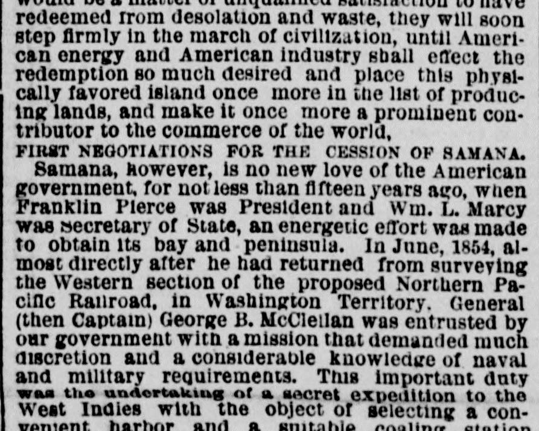
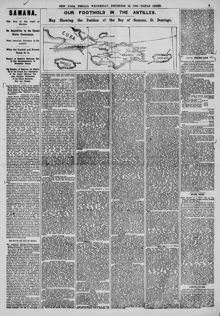

Samana, however, Is no new love of the American government, for not less than fifteen years agoSamaná, sin embargo, no es un nuevo amor del gobierno estadounidense, pues
The New York Herald. New York [N.Y.], December 22, 1869. Page 3. View the originalVer el original


See the full pageVer la página completaAccording to the newspaper, the American government made a previous effort to obtain the bay and peninsula of Samana approximately fifteen years prior under President Franklin Pierce and Secretary of State Wm. L. Marcy. In June 1854, then-Captain George B. McClellan was sent on a secret expedition to the West Indies aboard the frigate Columbia to select a convenient harbor and coaling station for the U.S. Navy. McClellan returned in September with maps, sketches, and information, resulting in the selection of the bay and peninsula of Samana for the proposed station.Según el diario, el gobierno estadounidense realizó una tentativa anterior para adquirir la bahía y la península de Samaná unos quince años atrás, bajo la presidencia de Franklin Pierce y con Wm. L. Marcy como secretario de Estado. En junio de 1854, el entonces capitán George B. McClellan fue comisionado en misión reservada a las Antillas a bordo de la fragata Columbia con objeto de localizar una bahía adecuada y estación carbonera para la marina de los Estados Unidos. McClellan regresó en septiembre con planos, croquis e informes periciales, determinando la elección de la bahía y península de Samaná para el proyectado establecimiento naval.
FULL TEXT:TEXTO COMPLETO:
FIRST NEGOTIATIONS FOR THE CESSION OF SAMANA.PRIMERAS NEGOCIACIONES PARA LA CESIÓN DE SAMANÁ.
Samana, however, is no new love of the American government, for not less than fifteen years ago, when Franklin Pierce was President and Wm. L. Marcy was Secretary of State, an energetic effort was made to obtain its bay and peninsula. In June, 1854, almost directly after he had returned from surveying the Western section of the proposed Northern Pacific Railroad, in Washington Territory, General (then Captain) George B. McClellan was entrusted by our government with a mission that demanded much discretion and a considerable knowledge of naval and military requirements. This important duty was the undertaking of a secret expedition to the West Indies with the object of selecting a convenient harbor and a suitable coaling station for the vessels of the United States navy cruising in the neighborhood of those islands and passing into the Gulf of Mexico. He sailed in the United States frigate Columbia, first to St. Domingo and then to other islands in the vicinity, and returned home in September with a vast amount of information of considerable importance, and with a large number of maps and sketches of the places visited. The result of Captain McClellan's inquiries was the selection for the proposed station and harbor of the bay and peninsula of Samana, the advantages of which were set forth in two reports—one on the harbor and its defences and the other descriptive of the island—but neither of which have been given to the public, doubtless owing to the secret nature of the expedition. Negotiations were at once opened with the government of St. Domingo and every endeavor made to obtain the cession of the bay and peninsula to the United States, but without terminating in the desired acquisition, owing, it was supposed at the time, to the jealousy of the European Powers and their influence upon the Dominican government. If we are to take the remarks of the London Times as any guidance to the action of the Powers of Europe at the present day, we may anticipate a more favorable issue to the present negotiations. In fact, the government of St. Domingo have now agreed, while before they refused, to cede the desired territory, which is one step in advance of the previous negotiations; but an attempt may yet be made to prevent the ratification of the treaty by that republic, should it pass the ordeal of the United States Senate.Samaná, sin embargo, no es un amor nuevo del gobierno estadounidense, pues hace no menos de quince años, cuando Franklin Pierce era Presidente y Wm. L. Marcy era Secretario de Estado, se hizo un enérgico esfuerzo para obtener su bahía y península. En junio de 1854, casi directamente después de haber regresado de inspeccionar la sección occidental del proyectado Ferrocarril del Pacífico Norte, en el Territorio de Washington, el general (entonces capitán) George B. McClellan fue encargado por nuestro gobierno de una misión que demandaba mucha discreción y un considerable conocimiento de los requerimientos navales y militares. Este importante deber era emprender una expedición secreta a las Indias Occidentales con el objeto de seleccionar un puerto conveniente y una estación carbonífera adecuada para los buques de la marina de los Estados Unidos que cruzaban por la vecindad de aquellas islas y pasaban al Golfo de México. Zarpó en la fragata de los Estados Unidos Columbia, primero hacia Santo Domingo y luego hacia otras islas de la vecindad, y regresó a casa en septiembre con una vasta cantidad de información de considerable importancia, y con un gran número de mapas y bocetos de los lugares visitados. El resultado de las investigaciones del capitán McClellan fue la selección para la estación y el puerto propuestos de la bahía y península de Samaná, cuyas ventajas fueron expuestas en dos informes—uno sobre el puerto y sus defensas y el otro descriptivo de la isla—pero ninguno de los cuales ha sido dado al público, sin duda debido a la naturaleza secreta de la expedición. Las negociaciones se abrieron de inmediato con el gobierno de Santo Domingo y se hizo todo esfuerzo para obtener la cesión de la bahía y la península a los Estados Unidos, pero sin terminar en la adquisición deseada, debido, se supuso en su momento, a los celos de las Potencias europeas y su influencia sobre el gobierno dominicano. Si hemos de tomar las observaciones del Times de Londres como alguna guía para la acción de las Potencias de Europa en la actualidad, podemos anticipar un resultado más favorable para las presentes negociaciones. De hecho, el gobierno de Santo Domingo ahora ha acordado, mientras que antes se negó, ceder el territorio deseado, lo cual es un paso por delante de las negociaciones anteriores; pero aún puede hacerse un intento para impedir la ratificación del tratado por esa república, si acaso pasa la prueba del Senado de los Estados Unidos.
TERMS OF THE CONTRACT.TÉRMINOS DEL CONTRATO.
The provisions of the contract for the leasing of the Bay of Samana to the United States are, so far as at present known, to be as follows:—The lease is to run for a term of fifty years, and the United States to pay to the Dominican government the annual rental of $150,000 in gold. The first year's rent has been paid down. In addition to the annual rent, President Baez, it is said, is to receive the sum of $50,000 annually. To say the least of it this reads somewhat strange and requires some explanation. Apart from the money supplied by the United States, $80,000 worth of arms and munitions of war have been placed at the disposal of the republic of St. Domingo. This amount, however, is to be deducted from future appropriations. Such, in brief, are the reported terms upon which the United States has acquired this magnificent harbor, which has been pronounced by Admiral Porter as "the finest naval station in the world." It is not a little remarkable that the transfer of the Bay of Samana was made on the anniversary of the first landing of Columbus, which took place on the 6th day of December, 1492. Three hundred and seventy-seven years have passed over since the famous Genoese made the discovery of the fruitful island of Hispaniola, and where for centuries waved the proud flag of Spain the banner of a nation then unknown now floats in triumph.Las disposiciones del contrato para el arrendamiento de la Bahía de Samaná a los Estados Unidos son, según lo conocido al presente, las siguientes:—El arrendamiento correrá por un término de cincuenta años, y los Estados Unidos pagarán al gobierno dominicano la renta anual de $150,000 en oro. La renta del primer año ha sido pagada por adelantado. Además de la renta anual, el presidente Báez, se dice, ha de recibir la suma de $50,000 anualmente. Por decir lo menos, esto suena algo extraño y requiere alguna explicación. Aparte del dinero suministrado por los Estados Unidos, $80,000 en armas y municiones de guerra han sido puestos a disposición de la república de Santo Domingo. Esta cantidad, sin embargo, ha de ser deducida de asignaciones futuras. Tales, en breve, son los términos reportados bajo los cuales los Estados Unidos han adquirido este magnífico puerto, que ha sido pronunciado por el almirante Porter como «la más fina estación naval del mundo». No es poco notable que la transferencia de la Bahía de Samaná se hiciera en el aniversario del primer desembarco de Colón, que tuvo lugar el 6 de diciembre de 1492. Trescientos setenta y siete años han pasado desde que el famoso genovés hizo el descubrimiento de la fértil isla de La Española, y donde por siglos ondeó la orgullosa bandera de España, la enseña de una nación entonces desconocida ahora flota en triunfo.